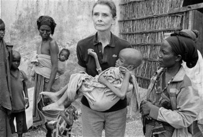
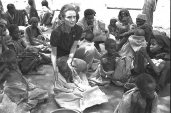

Life After Acting
After 1967, Audrey chose to devote more time to her family and acted only occasionally in the following decades. Grateful for her own good fortune after enduring the German occupation as a child, she dedicated the remainder of her life to helping impoverished children in the poorest nations.
Audrey's travels were made easier by her wide knowledge of languages; besides being naturally bilingual in English and Dutch, she also was fluent in French, Italian, Spanish, and German. Audrey was appointed a Goodwill Ambassador of UNICEF. United States president George H. W. Bush presented her with the Presidential Medal of Freedom in recognition of her work with UNICEF, and the Academy of Motion Picture Arts and Sciences posthumously awarded her the Jean Hersholt Humanitarian Award for her contribution to humanity, with her son accepting on her behalf. (Source: http://www.allclip.net/humanitarian-work-audrey-hepburn/, retrieved on 20 September 2016)
Audrey as a Goodwill Ambassador between 1988-1989
Wished to help people all her life, Audrey’s first important field mission was to Ethiopia in 1988. Ethiopia is still one of the poorest countries in Africa, yet in the world. Child death rates are so high and children suffer malnutrition for all their lives, and most of them die before they become adults. But back in 80s, Ethiopia was even worse.
 In Ethiopia Audrey Hepburn visited an orphanage in the city of Mek’ele, in which 500 starving children were staying. To the orphanage, UNICEF had send food and Audrey helped the children to eat. It was her first shocking experience since her own childhood, in which she was helped by UN and had food.
After her Ethiopia trip, she expressed her feelings about the starvation problem of the world by saying:
“I have a broken heart. I feel desperate. I can’t stand the idea that two million people are in imminent danger of starving to death and many of them are children. And that’s not because there isn’t enough of food. But It is because that they can’t be distributed. Last spring, Red Cross and UNICEF workers were called out of the northern provinces because of two simultaneous civil wars. By the time, I went into rebel country and saw mothers and their children. They had walked for ten days, some of them had walked three weeks, they were all looking for food. That image is too much for me. The ‘Third World’ is a term I don’t like very much, because we’re all in one world. I wish people knew that the largest part of the whole humanity is suffering.”
(Source: http://www.allclip.net/humanitarian-work-audrey-hepburn/, retrieved on 20 September 2016)